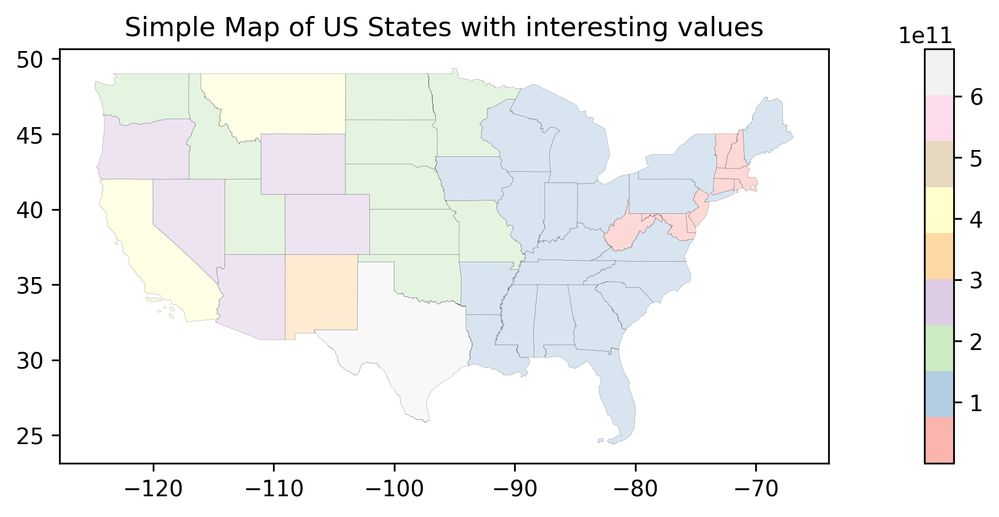
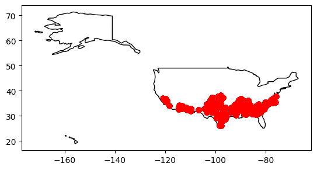

Cotton: Use cases: queries and visualizations#
List of subjects#
Show code cell source
query = """
PREFIX agschemas: <https://agschemas.org/>
PREFIX schema: <https://schema.org/>
SELECT * WHERE {
?harvest agschemas:harvestedAt ?location.
?location schema:latitude ?latitude;
schema:longitude ?longitude.
}
"""
dfresults = sparql_query_result_to_df(cottonGraph.query(query))
dfresults['geometry'] = [Point(xy) for xy in zip(dfresults.longitude, dfresults.latitude)]
dfresults
| harvest | location | latitude | longitude | geometry | |
|---|---|---|---|---|---|
| 0 | http://cottonexample.org/1 | http://cottonexample.org/location/Ac_Drip | 32.7457 | -101.9396 | POINT (-101.9396 32.7457) |
| 1 | http://cottonexample.org/10 | http://cottonexample.org/location/Ac_Drip | 32.7457 | -101.9396 | POINT (-101.9396 32.7457) |
| 2 | http://cottonexample.org/100 | http://cottonexample.org/location/Ac_Drip | 32.7457 | -101.9396 | POINT (-101.9396 32.7457) |
| 3 | http://cottonexample.org/101 | http://cottonexample.org/location/Ac_Drip | 32.7457 | -101.9396 | POINT (-101.9396 32.7457) |
| 4 | http://cottonexample.org/102 | http://cottonexample.org/location/Ac_Drip | 32.7457 | -101.9396 | POINT (-101.9396 32.7457) |
| ... | ... | ... | ... | ... | ... |
| 43619 | http://cottonexample.org/9898 | http://cottonexample.org/location/Charles_Ashb... | 33.203 | -101.8439 | POINT (-101.8439 33.203) |
| 43620 | http://cottonexample.org/9899 | http://cottonexample.org/location/Charles_Ashb... | 33.203 | -101.8439 | POINT (-101.8439 33.203) |
| 43621 | http://cottonexample.org/9900 | http://cottonexample.org/location/Charles_Ashb... | 33.203 | -101.8439 | POINT (-101.8439 33.203) |
| 43622 | http://cottonexample.org/9901 | http://cottonexample.org/location/Charles_Ashb... | 33.203 | -101.8439 | POINT (-101.8439 33.203) |
| 43623 | http://cottonexample.org/9902 | http://cottonexample.org/location/Charles_Ashb... | 33.203 | -101.8439 | POINT (-101.8439 33.203) |
43624 rows × 5 columns


Show code cell source
query = """
PREFIX agschemas: <https://agschemas.org/>
PREFIX schema: <https://schema.org/>
PREFIX wdt: <http://www.wikidata.org/prop/direct/>
SELECT DISTINCT ?location ?wikidatalink WHERE {
?harvest agschemas:harvestedAt ?location.
?location schema:isPartOf ?wikidatalink .
}
"""
dfresults = sparql_query_result_to_df(cottonGraph.query(query))
dfresults
| location | wikidatalink | |
|---|---|---|
| 0 | http://cottonexample.org/location/Ac_Drip | http://www.wikidata.org/entity/Q970422 |
| 1 | http://cottonexample.org/location/AgriLife_Res... | http://www.wikidata.org/entity/Q49242 |
| 2 | http://cottonexample.org/location/Charles_Parker | http://www.wikidata.org/entity/ |
| 3 | http://cottonexample.org/location/Chase_Mahalitic | http://www.wikidata.org/entity/Q2387079 |
| 4 | http://cottonexample.org/location/Chester_County | http://www.wikidata.org/entity/ |
| ... | ... | ... |
| 645 | http://cottonexample.org/location/Catahoula | http://www.wikidata.org/entity/ |
| 646 | http://cottonexample.org/location/Catahoula_Caddo | http://www.wikidata.org/entity/ |
| 647 | http://cottonexample.org/location/Chad_Boese | http://www.wikidata.org/entity/Q2005266 |
| 648 | http://cottonexample.org/location/Chambers | http://www.wikidata.org/entity/ |
| 649 | http://cottonexample.org/location/Charles_Ashb... | http://www.wikidata.org/entity/Q982084 |
650 rows × 2 columns